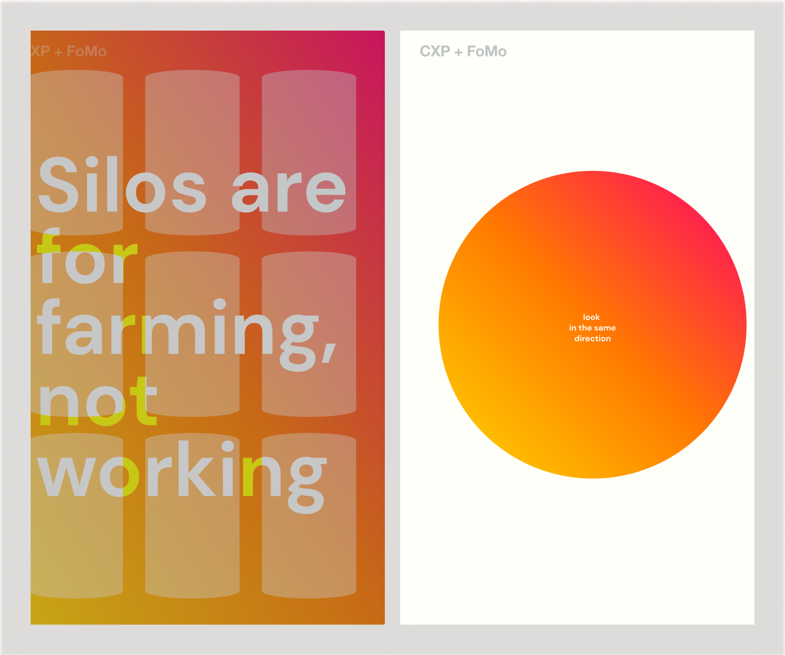
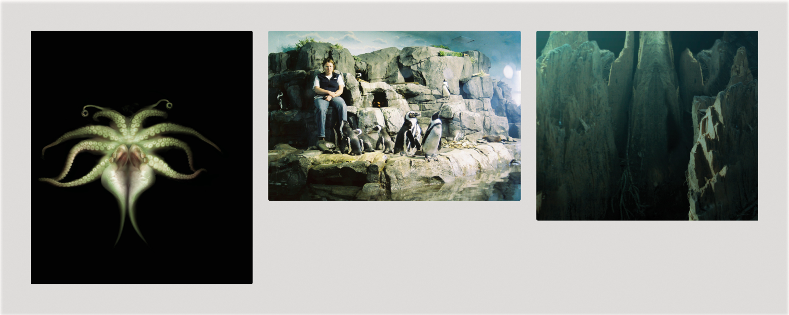

Before product design, I was an art director. I still make things by hand.
Posters for my team at Meta, on how we wanted to work together.


And I paint: watercolor, ink and gouache, mostly imaginary places.
More paintings, and prints, at celiamarais.com